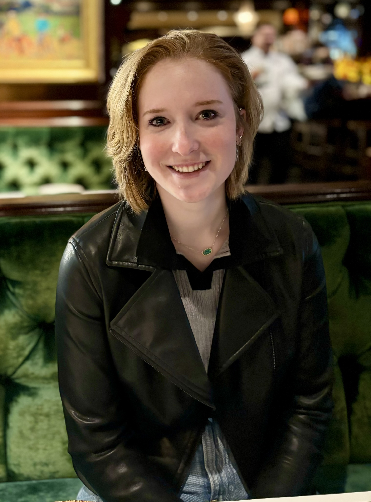
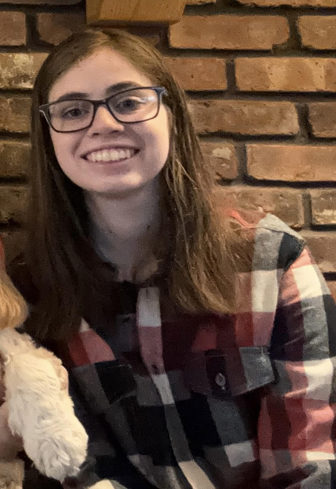
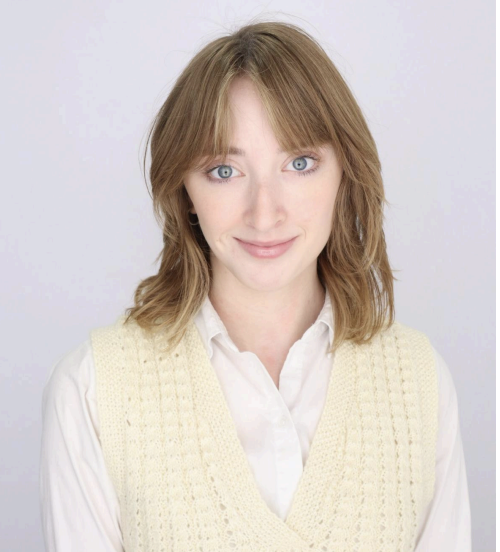
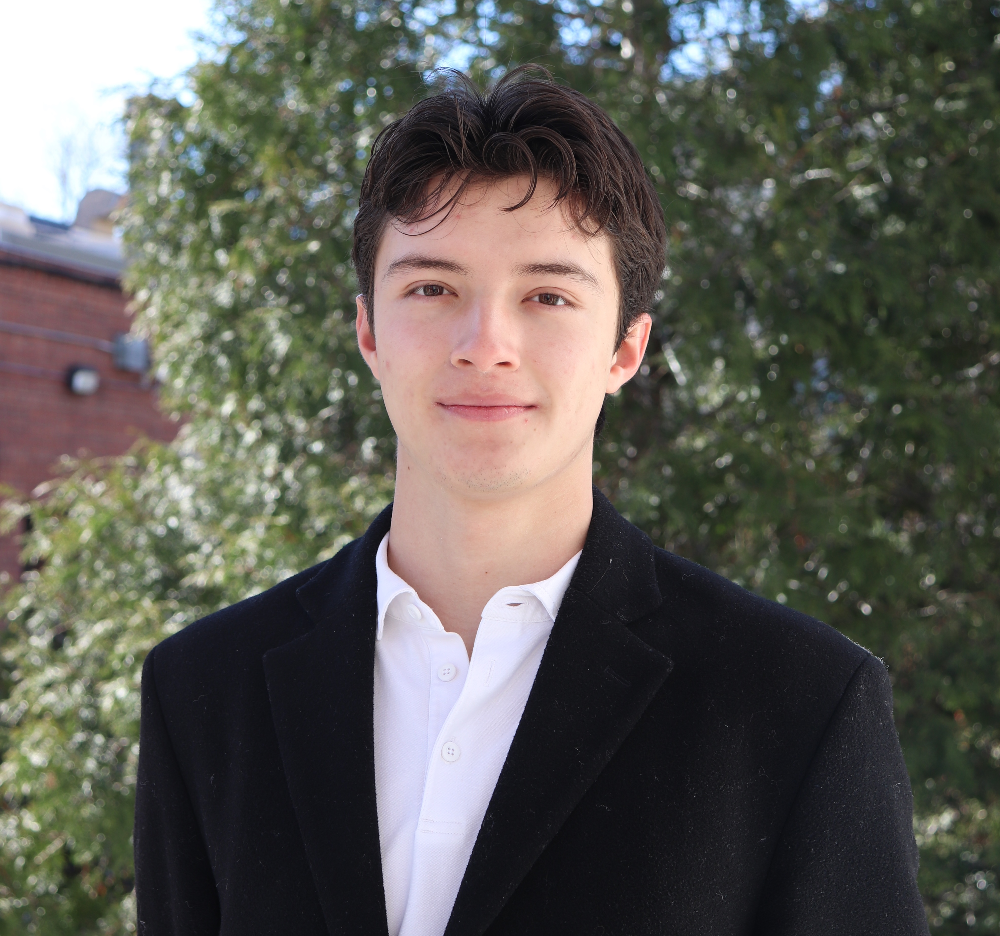
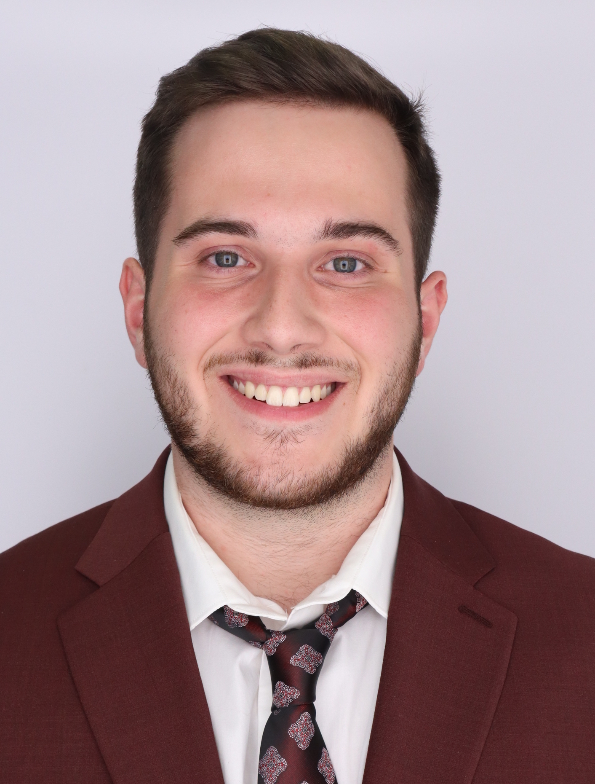
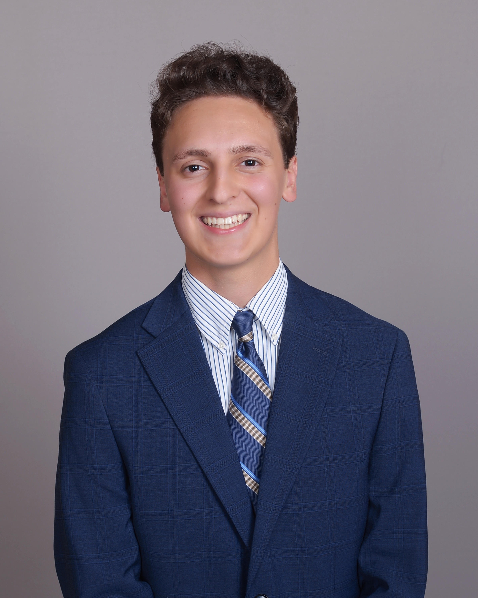
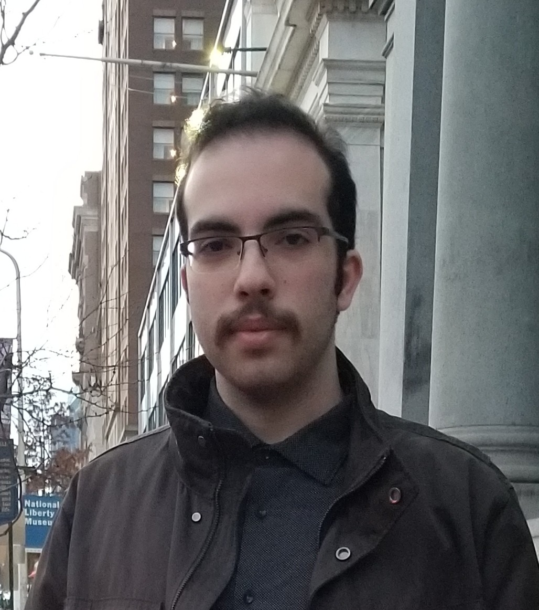

Student panelists
Referencing the content in this webpage:
Bulusu, Kartik V. (2025, October 17). Introduction to Mechanical and Aerospace Engineering [Course lecture notes, codes and presentations]. Department of Mechanical and Aerospace Engineering, The George Washington University.
Grace Welsh
|
Hi! I am Grace Welsh. I am a senior studying MAE and I am a Presidential Scholar at GWU. I have worked in composite material testing, design and manufacturing. I am a part of the rocket team (aerostructures), SEASSPAN, A.O.E. (Alpha Omega Epsilon), and I am a student research assistant with Professor Panah. Email: gracewelsh27@gwmail.gwu.edu LinkedIn |
 |
Sarah Levine
|
Greetings, my name is Sarah Levine. I am a senior MAE/aerospace engineering major and a geological sciences minor. I have worked in Professor Keidar’s lab developing vacuum-arc thrusters since freshman year and am part of the Clark Scholars program. My other activities include volunteering for SEAS information sessions and community service outside GW. I enjoy building things, rocks, drawing and painting, and video games. Email: slevine15@gwmail.gwu.edu |
 |
Julia McGillivray
|
Hi, my name is Julia McGillivray! My experience and interests lie in aerodynamic and fluid analysis. I interned at Draper over the summer, gaining real-world project experience in aerospace, and am staying on part-time for the year! I joined Design-Build-Fly this year, and was on Engineers without Borders for two years. I also work in the admissions office, representing my experience with the MAE department here. I am also a Presidential Scholar at The George Washington University. Email: julia_mcg26@gwmail.gwu.edu |
 |
Luis Soto Moyers
|
Luis Soto Moyers is a fourth-year Mechanical and Aerospace Engineering student at the George Washington University, working in the Thermo-Fluids Laboratory. He has experience in experimental research, engineering design, and programming. Luis serves as President of SHPE, is a Theta Tau alum, and is fluent in English and Spanish. Email: lsotomoyers26@gwmail.gwu.edu LinkedIn |
 |
Dominic Savarino
|
Dominic Savarino (BS ’25, MS ’26) is a MAE teaching assistant and graduate student studying robotics and controls. While an undergraduate at GW, he completed internships with PennDOT, Space Telescope Science Institute, and GW Intelligent Aerospace Systems Lab, studied abroad, and was a part of organizations such as Clark Scholars, SEASSPAN, ASME, and Pi Tau Sigma. Email: dsavarino@email.gwu.edu LinkedIn |
 |
Marc-Andre Berthin
|
Hey everyone, my name is Marc-Andre Berthin and I am a senior MAE student passionate about advancing space technology! At GW, I have been involved with undergraduate research and several orgs such as CubeSat and SEASSPAN. Outside of academics, I enjoy watching/playing soccer and football, traveling, and studying geography! Email: maberthin22@gwmail.gwu.edu LinkedIn |
 |
Leonardo Borchert
|
Leonardo Borchert is a Mechanical and Aerospace Engineering student at the George Washington University. As Propulsion Division Lead for the GW Rocket Team and a three-time NIST CHIPS Act fellow, his work spans advanced propulsion and semiconductor research. He aspires to pioneer next-generation aerospace systems through industry and entrepreneurship. Email: mleoborchert@gwu.edu LinkedIn |
 |
Kaan Tastan
|
Kaan Tastan is a senior Mech.E. student at GWU and President of the ASME student chapter. In Professor Bardet’s Thermo-Fluids Lab, he designs auxiliary systems for the BPF water flow loop. He has also led dual-stage rocketry projects. After graduation, he will commission as a U.S. Navy Nuclear Submarine Officer. Email: kaantastan@gwu.edu LinkedIn |